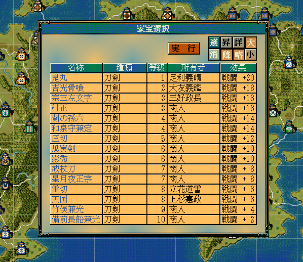
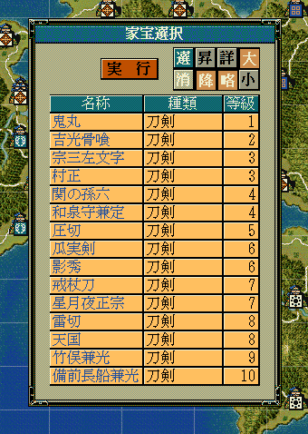
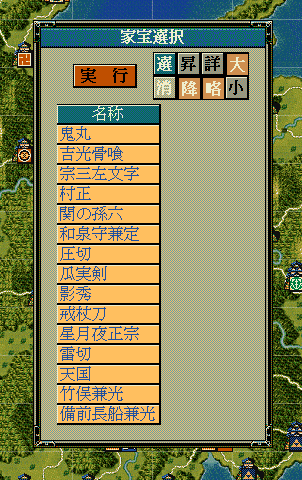

家宝のリストを表示して、そこから選択してもらうためのダイアログを表示するAPIです。
大小関わらず、自作の独自イベントなどで利用することになるでしょう。
void カスタム::On_プレイヤ担当ターン《メイン画面》() {
番号リスト型 ShowKahouList;
for (int iKahouID = 0; iKahouID < 最大数::家宝情報::配列数; iKahouID++) {
// 刀剣である
if (p家宝情報[iKahouID].家宝分類 == 家宝分類::刀剣) {
// 登場しており、消失していない
if (p家宝情報[iKahouID].未登場 == FALSE && p家宝情報[iKahouID].消失 == FALSE) {
ShowKahouList.push_back(iKahouID);
}
}
}
int iSelectedKahouID = 選択家宝ダイアログ表示(ShowKahouList, カラム::家宝::デフォルト );
if (0 < iSelectedKahouID && iSelectedKahouID < 最大数::家宝情報::配列数) {
デバッグ出力 << Get_家宝名(iSelectedKahouID) << "が選択されました" << endl;
}
else {
デバッグ出力 << "家宝は選択されませんでした" << endl;
}
}

int iSelectedKahouID = 選択家宝ダイアログ表示(ShowKahouList, カラム::家宝::名称|カラム::家宝::種類|カラム::家宝::等級 );

int iSelectedKahouID = 選択家宝ダイアログ表示(ShowKahouList, カラム::家宝::名称);

「家宝ダイアログ」に関する主な所は以上となります。 詳しく「ダイアログ情報型.h」を参照してください。